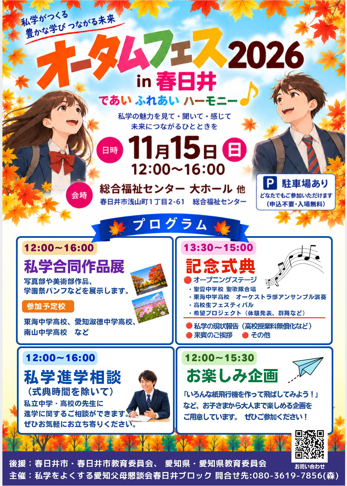

私学合同作品展
写真部や美術部作品、 学園祭パンフなどを展示します。
参加予定校： 東海中学高校、 愛知淑徳中学高校、 南山中学高校 など
私学の魅力を見て・聞いて・感じて
未来につながるひとときを
写真部や美術部作品、 学園祭パンフなどを展示します。
参加予定校： 東海中学高校、 愛知淑徳中学高校、 南山中学高校 など
オープニングステージ
私学の現状報告、 来賓のご挨拶、 その他
私立中学・高校の先生に、
進学に関するご相談ができます。
ぜひお気軽に
お立ち寄りください。
「いろんな紙飛行機を作って 飛ばしてみよう！」 など、 お子さまから大人まで 楽しめる企画を ご用意しています。
会場：
春日井市
総合福祉センター
大ホール 他
住所：
春日井市浅山町1丁目2-61
お問い合わせ：
080-3619-7856（森）
チラシをタップすると、 端末の画面幅に合わせて 見やすく表示されます。
